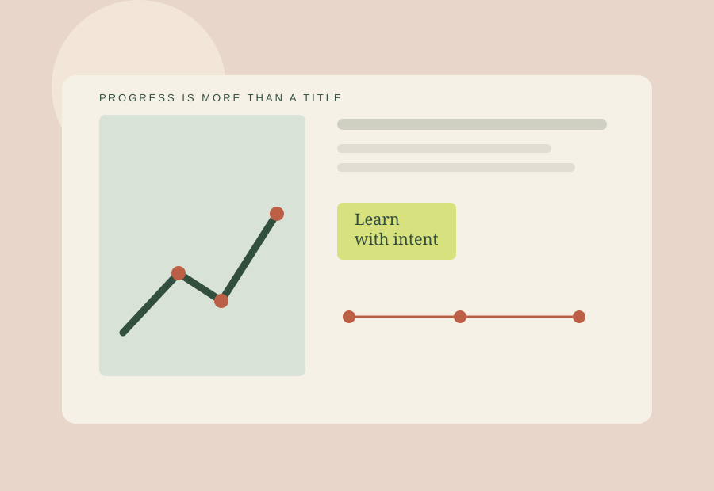

Meaning & job content
Does work engage you, use strengths and offer learning or agency?
- Purpose and relevance
- Skill use and development
- Autonomy and clarity
Ask: What feels worthwhile? What drains me?
A FRAMEWORK FOR REFLECTION
Notice the conditions that give your work energy—and the gaps that may be costing you.

Does work engage you, use strengths and offer learning or agency?
Ask: What feels worthwhile? What drains me?
Separate pay amount from how compensation decisions are made.
Ask: What is unclear about my pay or growth path?
Consider the practical setup around work: environment, workload, tools and boundaries.
Ask: What friction makes work harder?
Can people contribute, disagree, learn and ask for help without unreasonable fear?
Ask: Can I raise a concern safely?
A supportive team may make demanding work manageable. Fair compensation can reinforce trust. Meaningful work may still become unsustainable if workload or conditions are poor.
There is no universal weighting. A factor tolerable for one person may be non-negotiable for another, particularly around basic needs, safety or caregiving.
The self-check uses multiple prompts per factor. It shows your relative pattern, not a ranking against other workers or an employer label.